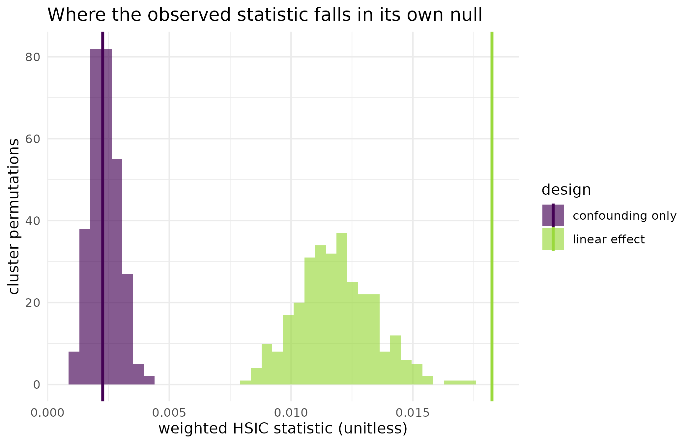

Does the treatment cause the outcome, or do they share a cause?
Source:vignettes/kernR-bdhsic.Rmd
kernR-bdhsic.RmdWhy
An agronomist has an observational record rather than a randomised trial. Paddocks that got the higher residue-retention intensity also happen to be the wetter, higher-nitrogen paddocks. Yield and management move together in my data, but so would they if management did nothing at all and the soil were doing all the work. Can I ask whether management moves yield, having subtracted what the soil explains, without first assuming the effect is a straight line? This vignette answers that with the backdoor-adjusted HSIC test, on three synthetic designs where the right answer is known by construction: a linear causal effect, no causal effect at all, and a curved causal effect. It closes with the case in which the test declines to answer.
What
bd_hsic_test() tests the do-null hypothesis of Hu,
Sejdinovic and Evans (2024),
which asks whether the outcome is still associated with the treatment
after intervening on the treatment, rather than merely in the
record as observed. It gets there in three steps. First it estimates the
density ratio
,
which reweights the observational sample so that it looks like a sample
in which treatment was assigned independently of the confounders;
estimate_density_ratio() and
fit_density_ratio() expose that step on its own, with four
interchangeable backends. Second it computes HSIC between treatment and
outcome under those weights, so any dependence the kernel can represent
counts, curved or otherwise. Third it builds the null by permuting the
outcome within clusters of similar conditional density
,
so the permutation respects the confounding structure instead of
destroying it.
kernel_causal_test() is the formula front door to the
same machinery: y ~ x | z1 + z2 names outcome, treatment
and adjustment set in one expression. Every call returns a
kernel_test_result carrying the statistic, the permutation
null, the p-value, and the effective sample size (ESS) of the
density-ratio weights – the diagnostic that decides whether the verdict
is worth anything, which is the subject of the last section.
Do
A linear causal effect
A synthetic design of 300 observations. A two-column confounder drives both treatment and outcome, and the treatment additionally has a genuine linear effect on the outcome of 0.8 per unit.
set.seed(42L)
n_obs <- 300L
z_conf <- matrix(rnorm(n_obs * 2L), n_obs, 2L)
x_lin <- 0.5 * z_conf[, 1L] + rnorm(n_obs)
y_lin <- 0.8 * x_lin + 0.5 * z_conf[, 2L] + rnorm(n_obs)
fit_linear <- bd_hsic_test(x_lin, y_lin, z_conf,
n_permutations = 299L, seed = 1L
)
fit_linear
#>
#> bd-HSIC Test
#>
#> Statistic: 0.0182464
#> P-value: 0.0033
#> N: 150
#> Perms: 299
#> Kernel X: rbf (bw = 1.062)
#> Kernel Y: rbf (bw = 1.425)
#> ESS: 149.7No causal effect, confounding only
The same confounder and the same treatment, but the outcome is now built from the confounder alone. Treatment and outcome are still correlated in the record; nothing flows from one to the other.
set.seed(42L)
z_null <- matrix(rnorm(n_obs * 2L), n_obs, 2L)
x_null <- 0.5 * z_null[, 1L] + rnorm(n_obs)
y_null <- 0.5 * z_null[, 1L] + z_null[, 2L] + rnorm(n_obs)
marginal_r <- cor(x_null, y_null)
round(marginal_r, 3L)
#> [1] 0.128
fit_confounded <- bd_hsic_test(x_null, y_null, z_null,
n_permutations = 299L, seed = 1L
)
fit_confounded
#>
#> bd-HSIC Test
#>
#> Statistic: 0.0022688
#> P-value: 0.5000
#> N: 150
#> Perms: 299
#> Kernel X: rbf (bw = 1.062)
#> Kernel Y: rbf (bw = 1.553)
#> ESS: 149.7A curved causal effect
The advantage of a kernel statistic over a partialling-out method is that it does not have to be told the shape of the effect. Here the treatment enters the outcome as its square, so the average slope is close to zero.
set.seed(42L)
n_quad <- 400L
z_quad <- matrix(rnorm(n_quad * 2L), n_quad, 2L)
x_quad <- z_quad[, 1L] + rnorm(n_quad)
y_quad <- x_quad^2 + z_quad[, 2L] + rnorm(n_quad, sd = 0.5)
fit_quadratic <- bd_hsic_test(x_quad, y_quad, z_quad,
n_permutations = 299L, seed = 1L
)
fit_quadratic
#>
#> bd-HSIC Test
#>
#> Statistic: 0.0206771
#> P-value: 0.0033
#> N: 200
#> Perms: 299
#> Kernel X: rbf (bw = 1.299)
#> Kernel Y: rbf (bw = 2.029)
#> ESS: 199.6The formula interface
dat_quad <- data.frame(
y = y_quad, x = x_quad, z1 = z_quad[, 1L], z2 = z_quad[, 2L]
)
fit_formula <- kernel_causal_test(
y ~ x | z1 + z2,
data = dat_quad, method = "bd-hsic",
n_permutations = 299L, seed = 1L
)
fit_formula
#>
#> bd-HSIC Test
#>
#> Statistic: 0.0206771
#> P-value: 0.0033
#> N: 200
#> Perms: 299
#> Kernel X: rbf (bw = 1.299)
#> Kernel Y: rbf (bw = 2.029)
#> ESS: 199.6The figure: two nulls, two verdicts
null_df <- rbind(
data.frame(
statistic = fit_linear$null_distribution, design = "linear effect"
),
data.frame(
statistic = fit_confounded$null_distribution,
design = "confounding only"
)
)
obs_df <- data.frame(
design = c("linear effect", "confounding only"),
statistic = c(fit_linear$statistic, fit_confounded$statistic)
)
ggplot2::ggplot(null_df, ggplot2::aes(x = statistic, fill = design)) +
ggplot2::geom_histogram(bins = 40L, alpha = 0.65,
position = "identity", colour = NA) +
ggplot2::geom_vline(
data = obs_df,
ggplot2::aes(xintercept = statistic, colour = design),
linewidth = 1
) +
ggplot2::scale_fill_viridis_d(name = "design", end = 0.85) +
ggplot2::scale_colour_viridis_d(name = "design", end = 0.85) +
ggplot2::labs(
x = "weighted HSIC statistic (unitless)",
y = "cluster permutations",
title = "Where the observed statistic falls in its own null"
) +
ggplot2::theme_minimal()
Cluster-permutation null distributions of the weighted HSIC statistic for the linear-effect design and the confounding-only design, with each observed statistic marked by a vertical line in the matching colour. The two nulls are nearly the same shape; only the observed statistics separate the two designs.
| Design | Statistic | p-value | ESS | Test n |
|---|---|---|---|---|
| linear causal effect | 0.0182 | 0.0033 | 149.7 | 150 |
| confounding only | 0.0023 | 0.5000 | 149.7 | 150 |
| quadratic causal effect | 0.0207 | 0.0033 | 199.6 | 200 |
| quadratic, formula interface | 0.0207 | 0.0033 | 199.6 | 200 |
When the test declines to answer
The density-ratio weights are the whole adjustment, so a verdict is
worth exactly as much as they are. bd_hsic_test() measures
that with the effective sample size of the weights and refuses to stand
behind a p-value computed from a handful of dominant observations. The
design below is the ordinary way that happens in a field record: too
many covariates for too few plots. Fifty plots carry a 24-column soil
and climate block, and the management variable is a function of the
whole block, so the reweighting has almost no independent information to
work with.
set.seed(9L)
n_plots <- 50L
n_cov <- 24L
z_thin <- matrix(rnorm(n_plots * n_cov), n_plots, n_cov)
x_thin <- rowSums(z_thin) / sqrt(n_cov) + rnorm(n_plots)
y_thin <- 0.5 * x_thin + rnorm(n_plots)
gate_message <- NULL
fit_thin <- withCallingHandlers(
bd_hsic_test(x_thin, y_thin, z_thin, n_permutations = 199L, seed = 1L),
warning = function(w) {
gate_message <<- conditionMessage(w)
invokeRestart("muffleWarning")
}
)
is_kernR_abstention(fit_thin)
#> [1] TRUE
class(fit_thin)
#> [1] "kernR_abstention" "kernel_test_result"The gate states its own case; the message is captured above rather than printed as a condition so that this vignette renders without warnings.
bd_hsic_test(): ESS (1.6) is below 10% of n_test (25). The weighted test statistic is dominated by a small number of high-weight observations; the resulting p-value is not a reliable verdict. Increase n, switch density_ratio backend, or tighten the design.
Read
On the linear design the weighted HSIC statistic is 0.0182 against a null whose draws reach 0.0172, giving a p-value of 0.0033: the effect survives adjustment, which it should, because it was built in. On the confounding-only design the raw correlation between treatment and outcome is 0.128 – an association any unadjusted test would report – yet the adjusted statistic is 0.00227 with a p-value of 0.5. The reweighting has removed the association, which is the whole point: what looked like an effect was the soil.
The curved design is where a kernel statistic separates from a linear adjustment. The treatment enters the outcome as its square, so the average slope over the sample is close to zero and a partialling-out method has nothing to find; bd-HSIC returns 0.0207 with a p-value of 0.0033. The formula interface reaches the same verdict on the same data, statistic 0.0207, p-value 0.0033.
The figure carries the part the table cannot. The two permutation nulls are almost the same distribution: the null does not know which design produced it, because within-cluster permutation preserves the confounding structure in both cases. What differs is where the observed statistic lands, and that is what the p-values report.
The last design is the one an analyst most needs to recognise. The
effective sample size of the density-ratio weights collapses to 1.6 out
of 25 test observations, a fraction of 0.065, below the default floor of
0.1. The test still returns a p-value – 0.145 on this run – and that
number should not be used. is_kernR_abstention() is TRUE
and the result carries the class kernR_abstention ahead of
kernel_test_result, which is how an orchestra consumer
downstream recognises that kernR declined to stand behind its own
verdict without having to know kernR’s field names. The remedy is in the
message: more plots, a different density-ratio backend, or a smaller
adjustment set.
Limits
The three designs here are synthetic, with the confounding structure
known and the adjustment set complete by construction. No test in this
package can tell you that your adjustment set is complete: bd-HSIC
assumes the backdoor criterion holds for the covariates you supplied,
and an omitted confounder produces a confident wrong answer with a
healthy ESS. The density-ratio step is a fitted model too, so a badly
specified ratio biases the weighted statistic even when the ESS looks
acceptable; the ESS floor catches collapse, not misspecification. The
cluster permutation assumes exchangeability within its
propensity-similarity clusters, which is a weaker assumption than
independence but not a free one, and it is the wrong assumption when the
design has its own hierarchy. Finally the p-values above are permutation
p-values and cannot fall below
1 / (n_permutations + 1).
What to read next
Choosing a density-ratio backend compares the four backends behind the adjustment step on one confounded design, and is the place to go when the ESS diagnostic above is unsatisfactory. Multi-site trials and the permutation null replaces the propensity-similarity clustering used here with the design’s own sites, which is the right choice whenever the design tells you who is exchangeable with whom. A treatment that changes the spread and not the mean asks the distributional version of the same causal question for a binary treatment.
References
- Hu, R., Sejdinovic, D., & Evans, R. J. (2024). A kernel test for causal association via noise contrastive backdoor adjustment. Journal of Machine Learning Research, 25(160), 1-56.
Reproduce
Seed 42 for the three causal designs and 9
for the collapsed-ESS design; seed = 1L passed to every
test so the density-ratio fit and the permutation draws are fixed.
Package versions follow.
sessionInfo()
#> R version 4.6.1 (2026-06-24)
#> Platform: x86_64-pc-linux-gnu
#> Running under: Ubuntu 24.04.4 LTS
#>
#> Matrix products: default
#> BLAS: /usr/lib/x86_64-linux-gnu/openblas-pthread/libblas.so.3
#> LAPACK: /usr/lib/x86_64-linux-gnu/openblas-pthread/libopenblasp-r0.3.26.so; LAPACK version 3.12.0
#>
#> locale:
#> [1] LC_CTYPE=C.UTF-8 LC_NUMERIC=C LC_TIME=C.UTF-8
#> [4] LC_COLLATE=C.UTF-8 LC_MONETARY=C.UTF-8 LC_MESSAGES=C.UTF-8
#> [7] LC_PAPER=C.UTF-8 LC_NAME=C LC_ADDRESS=C
#> [10] LC_TELEPHONE=C LC_MEASUREMENT=C.UTF-8 LC_IDENTIFICATION=C
#>
#> time zone: UTC
#> tzcode source: system (glibc)
#>
#> attached base packages:
#> [1] stats graphics grDevices utils datasets methods base
#>
#> other attached packages:
#> [1] kernR_0.8.2
#>
#> loaded via a namespace (and not attached):
#> [1] vctrs_0.7.3 cli_3.6.6 knitr_1.51
#> [4] rlang_1.3.0 xfun_0.60 otel_0.2.0
#> [7] generics_0.1.4 S7_0.2.2 textshaping_1.0.5
#> [10] data.table_1.18.6.1 jsonlite_2.0.0 labeling_0.4.3
#> [13] glue_1.8.1 htmltools_0.5.9 PESTO_0.10.1
#> [16] ragg_1.5.2 sass_0.4.10 scales_1.4.0
#> [19] rmarkdown_2.32 grid_4.6.1 evaluate_1.0.5
#> [22] jquerylib_0.1.4 fastmap_1.2.0 yaml_2.3.12
#> [25] lifecycle_1.0.5 compiler_4.6.1 RColorBrewer_1.1-3
#> [28] fs_2.1.0 Rcpp_1.1.2 farver_2.1.2
#> [31] systemfonts_1.3.2 digest_0.6.39 viridisLite_0.4.3
#> [34] R6_2.6.1 bslib_0.12.0 withr_3.0.3
#> [37] tools_4.6.1 gtable_0.3.6 pkgdown_2.2.1
#> [40] ggplot2_4.0.3 cachem_1.1.0 desc_1.4.3